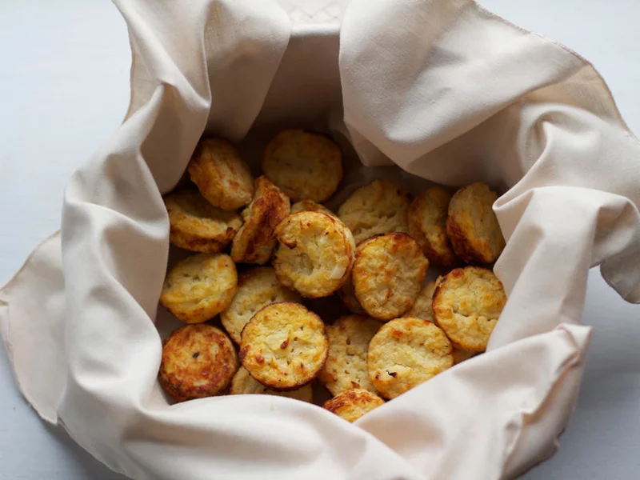

| Jalapeño Cheddar Corn Muffins |
|---|
| Ingredients |
| 7.6 ounces certified gluten-free
stone-ground cornmeal (about 1 1/4 cups) |
| 1.7 ounces white rice flour (about 1/3 cup) |
| 1.5 ounces brown rice flour (about 1/3 cup) |
| 2 tablespoons tapioca flour |
| 2 tablespoons potato starch |
| 2 tablespoons sugar |
| 1 tablespoon baking powder |
| 1/2 teaspoon baking soda |
| 1/2 teaspoon xanthan gum |
| 1/8 teaspoon salt |
| 1/8 teaspoon ground chipotle chile pepper |
| 1 1/2 cups nonfat buttermilk |
| 1/4 cup reduced-fat sour cream |
| 2 tablespoons unsalted butter, melted |
| 2 tablespoons canola oil |
| 2 large eggs |
| 4 ounces reduced-fat sharp cheddar cheese, shredded (about 1/2 cup) |
| 1/4 cup frozen whole-kernel corn, thawed |
| 2 tablespoons minced jalapeño pepper |
| Instructions |
|---|
| 1. Preheat oven to 375°. |
| 2. Weigh or lightly spoon cornmeal, white rice flour, and brown
rice flour into dry measuring cups; level with a knife. Combine cornmeal, white rice flour, brown rice flour, tapioca flour, and the next 7 ingredients (through chipotle chile pepper) in a medium bowl; stir with a whisk. Make a well in center of mixture. Combine buttermilk and next 4 ingredients (through eggs); stir with a whisk. Add to flour mixture, stirring just until moist. Stir in cheese, corn, and jalapeño pepper. |
| 3. Place 15 paper muffin cup liners in muffin cups; coat heavily
with cooking spray. Spoon batter into prepared cups. Bake at 375° for 20 minutes or until muffins spring back when lightly touched. Cool 10 minutes in pans on a wire rack; remove from pans. |
| 4. Enjoy! |
| Cheesy Cauliflower Biscuits |
|---|
| Ingredients |
| 1 cauliflower head, leaves removed |
| 3 garlic cloves, minced |
| 1/3 cup nonfat Greek yogurt |
| 1/2 cup cheddar cheese, shredded |
| 2 eggs |
| 2 egg whites |
| 1 teaspoon kosher salt |
| 1/2 teaspoon black pepper |
| Instructions |
|---|
| 1. Preheat the oven to 400°F. Steam cauliflower for about 10-12 minutes or
until very tender, then transfer to a food processor. Add minced garlic and pulse several times until smooth and creamy. |
| 2. Transfer mashed cauliflower into a large mixing bowl. Add in two whole
eggs, cheddar cheese, Nonfat Greek yogurt, salt and pepper and mix together. In a separate bowl, beat egg whites until stiff. Then, slowly fold the egg whites into the cauliflower mixture. |
| 3. Coat a mini muffin pan with cooking spray of your choice. Then fill the
cups to the top with the cauliflower mixture. Bake for 20-25 minutes, until golden brown. Remove from the pan, and set on a cooling rack. |
| 4. Enjoy! |
|  |